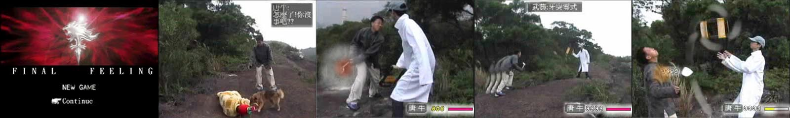
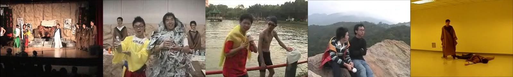
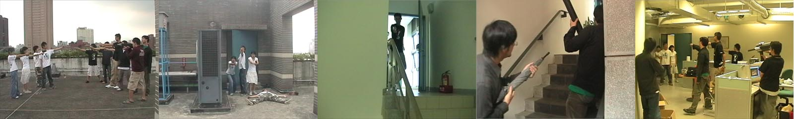
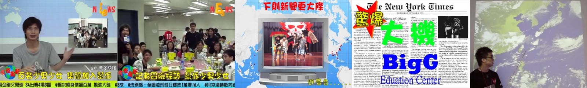
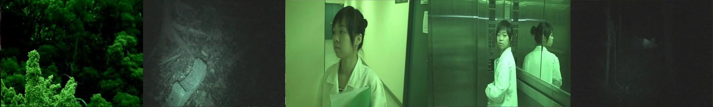
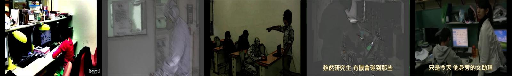

Video & Violin
Fu-Chen as an amateur video maker, including scenario writing, shooting script preparing, video directing, recording and editing, sound effect editing.
Video Technique Course Project
Taipei CK High School, 2002
This is my first video made in high school for the course project. The story is about people fighting for a recipe, and I make up it as a video game. I acknowledged how exhausting video making is in this project, especially when you handle all the things in your own...
EE Night Show
National Taiwan University, 2006
These films are made for the drama in EE night show 2006. The part 1 is a TV program of cooking skill competition of the two leading characters in the drama. The part 2 is the ending of the drama that the leading character recalls his best friend after he died.
EE Summer Camp
National Taiwan University, 2007
Prelude
This is the prelude video of our EE summer camp which is held for high school students who are interested in EE. The theme of this summer camp is about the Mafia and gangsters, so I present a gangs' gun fight in this video.
Daily News
Here are the daily news which are played after the dinner in the summer camp. That is, we have to interview the camp members within all the activities of the camp from day to night, edit the news in only a few hours, and plan the next day's news when they sleep. Like the real news, there are also advertisements between the sections of news, and a weather forecast in the end. My partner and I slept no more than 20 hours in these 5 days of camp to accomplish this challenging mission, and we got good feedbacks about how plentiful and funny these news are.
EE Night Show
National Taiwan University, 2007
The film is made as the opening video of 2007 EE night show. The theme of this year is about wraith and fright, so I designed a short scary movie with a few terrific scenes. I still think it is not scary enough and want to put more scenes in it : )
EE Graduate Dance
Nation Taiwan University, 2009
My friends had a dance performance when we were in graduate school of NTU, and they asked me to made an advertising video. As the dance is performed to college students, I decided to present the tough parts of graduate school in this video.
